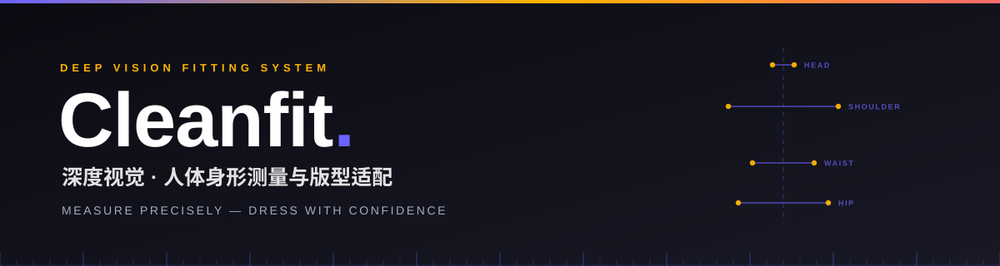
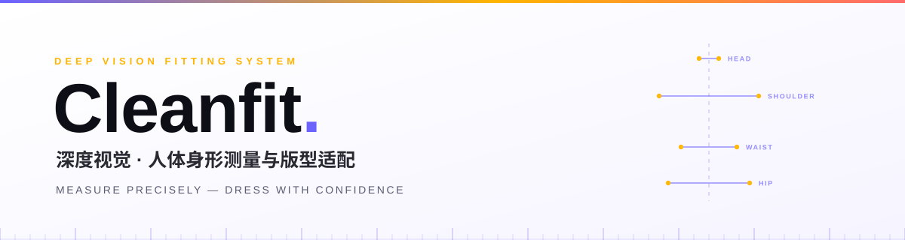
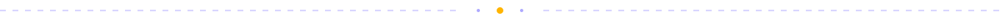

用一台消费级深度相机，把「我穿什么版型好看」变成一组可测量的数字。
身体比例 → 身形分类 → 版型建议，18 个月做到 ≤5% 误差。
为什么 核心功能 系统架构 硬件方案 精度指标 路线图 快速开始 English

🎯 为什么需要 Cleanfit
😵💫尺码表靠不住同一个 M 码， 不同品牌差出两个号。 线上买衣服像抽盲盒。 |
🪞镜子不会说谎，但也不解释你知道自己"肩宽"， 但不知道肩宽 / 身高 = 0.26 意味着什么版型。 |
📐量体成本太高裁缝量体几十项数据、 要预约、要上门。 而穿搭只需要 3 个比例。 |
Cleanfit 只做一件事：在受控场景下，把 3 个关键比例测准（≤5% 误差），翻译成一句人话——"你适合什么版型，避开什么版型"。
✨ 核心功能
🔬 三维比例精准测量深度相机采集人体点云 → AI 提取骨性特征点 → 自动校正透视与距离畸变 → 输出三大核心比例。 头身比 肩宽/身高 腰臀比
|
📊 身形分类与版型适配比例数据对标行业身形标准自动分类，输出上衣 / 下装的版型推荐，并给出「雷区版型」提示。 修身 合身 宽松
|
👕 静态虚拟试穿验证上传单件衣服平面图 → 基于实测身形比例自动形变贴合 → 生成正面试穿效果图，直观验证版型。 照片级静态效果，非实时 AR |
📋 结构化报告导出比例数据、身形分类、版型建议一次性导出为图文报告，可保存、可分享、可对比。 PDF / 图片 |
🧠 系统架构
flowchart TB
subgraph APP["🖥️ 应用层 · Application"]
direction LR
A1["📷 采集<br/>深度相机取图"] --> A2["📐 测量<br/>比例计算"] --> A3["📊 结果<br/>身形分类"] --> A4["👕 试穿<br/>版型验证"]
end
subgraph CORE["🧠 核心算法层 · Algorithm"]
direction LR
C1["① 点云分割与去噪"] --> C2["② 骨性特征点定位"] --> C3["③ 透视与距离校正"] --> C4["④ 身形分类与版型匹配"]
end
subgraph BASE["🔧 基础工具层 · Foundation"]
direction LR
B1["Astra SDK"]
B2["Open3D / PCL"]
B3["OpenCV"]
B4["NumPy"]
end
APP --> CORE --> BASE| 模块 | 做什么 | 关键点 |
|---|---|---|
| ① 点云分割与去噪 | 从衣物边缘、头发、地面噪声中分离出干净的人体轮廓 | 边缘噪声是最大的误差来源 |
| ② 骨性特征点定位 | 自动定位头顶、肩峰、腰最细处、臀峰、脚底 | 只认骨性标志，不认脂肪与衣物 |
| ③ 透视与距离校正 | 结合相机内参与深度信息，修正不同距离、微小俯仰造成的比例畸变 | 1.2m 处 ±0.1m 内保持稳定 |
| ④ 分类与版型匹配 | 比例 → 身形 → 版型，每一句建议都能追溯到具体数据 | 可解释，不做黑箱推荐 |
📷 硬件方案
| 深度相机 | 硬件预算 | 选型理由 | 软硬结合 |
|---|---|---|---|
|
奥比中光 Astra Mini Pro 开发版 |
¥850–950 含官方 SDK 与标定板 的完整开发套件 |
1m 处深度 MSE < 1.5mm 稳定实现 ≤5% 误差的 最低硬件门槛 |
USB 直连电脑 镜头畸变校正、深度噪声适配、 特征点优化， 算法与硬件深度绑定 |
💡 为什么不用手机摄像头？ 单目 RGB 缺少真实深度，只能靠模型"猜"比例，误差随姿态和光照剧烈波动。深度相机直接给出几何真值，这是 ≤5% 的前提。
📏 精度指标
所有指标基于限定测试场景：室内均匀柔光 · 正面自然站立 · 紧身打底衣物 · 拍摄距离 1.2m ± 0.1m| 类型 | 指标 | 误差承诺 |
|---|---|---|
| ✅ 保证项 | 头身比 · 肩宽 / 身高比 | 相对误差 ≤ 5% |
| 📌 参考项 | 腰臀比 | 相对误差 ≤ 7% |
输出形式：身形分类（倒三角 / H 型 / 梨型 / 苹果型）+ 比例观感描述 + 版型适配建议
| 🔻 倒三角 肩宽 > 胯宽 |
🔲 H 型 肩胯接近 |
🍐 梨型 胯宽 > 肩宽 |
🍎 苹果型 腰腹突出 |
🗺️ 开发路线图
▰▰▰▱▱▱▱▱▱▱▱▱▱▱▱▱▱▱ 阶段 1 · 进行中
gantt
title Cleanfit Development Roadmap
dateFormat YYYY-MM
axisFormat %Y-%m
section Phase 1 · 算法验证
Algorithm Validation (SMPL / H3.6M) :p1a, 2026-11, 3M
Feature Extraction & Classification :p1b, 2026-11, 3M
section Phase 2 · 硬件落地
Hardware Integration & Calibration :p2a, after p1a, 4M
Real-scene Optimization :p2b, after p1b, 4M
section Phase 3 · 精度打磨
Waist-Hip Ratio Tuning & Classification:p3a, after p2a, 5M
Static Virtual Try-On :p3b, after p2b, 5M
section Phase 4 · 测试与优化
Testing & Performance Optimization :p4, after p3a, 6M| 阶段 | 周期 | 重点 |
|---|---|---|
| 1 | 第 1–3 月 | 基于 SMPL / Human3.6M 跑通算法；特征提取、比例校正、身形分类 |
| 2 | 第 4–7 月 | 硬件对接；相机标定、畸变校正、真实场景优化、基础界面 |
| 3 | 第 8–12 月 | 腰臀比精度打磨、身形分类完善、虚拟试穿开发 |
| 4 | 第 13–18 月 | 测试补全、性能优化、可选拓展（侧面测量 / 多体位验证） |
🚀 快速开始
# 1. 克隆仓库
git clone https://github.com/Aholic-12/Cleanfit.git
cd Cleanfit
# 2. 安装依赖
pip install -r requirements.txt
# 3. 运行（详细文档随开发进度更新）
python main.py📦 环境依赖
| 依赖 | 版本 | 用途 |
|---|---|---|
| Python | 3.8+ |
运行时 |
| Open3D | 0.17+ |
点云处理 |
| 奥比中光 Astra SDK | 最新版 |
深度相机接口 |
| NumPy | 最新版 |
数值计算 |
| OpenCV | 最新版 |
图像处理与标定 |
⚠️ 运行前请确认
- 相机已通过 USB 3.0 直连（避免 USB Hub 降压导致掉帧）
- 环境为室内均匀柔光，避免顶光直射与逆光
- 穿着紧身打底衣物，赤足站立
- 拍摄距离保持在 1.2m ± 0.1m，镜头与身体正面平行
🧭 边界说明
⚠️ 以下是有意为之的设计约束，不是缺陷。
|
🚫 不做实时 AR 试穿 仅实现静态照片级试穿，不涉及布料仿真与动态渲染。 |
🧠 不堆模型 核心聚焦三维特征提取与校正，不为堆砌 AI 而滥用模型。 |
|
🎯 限定场景精度 所有指标基于受控环境，不夸大全场景通用效果。 |
⚡ 精度优先于功能 先保证核心测量的稳定性，再谈功能拓展。 |
🤝 参与贡献
欢迎贡献代码、数据或想法！无论是算法优化、场景测试还是文档改进，都非常需要。
Fork → Branch → Commit → Push → PR- Fork 本仓库
- 创建功能分支：
git checkout -b feature/amazing-feature - 提交修改：
git commit -m 'Add some amazing feature' - 推送分支：
git push origin feature/amazing-feature - 发起 Pull Request
English Summary
Cleanfit is a desktop-grade body measurement and fit-adaptation system. A consumer depth camera (Orbbec Astra Mini Pro) captures a human point cloud; AI 3D-vision algorithms extract skeletal landmarks, correct perspective and distance distortion, and output three core body ratios — then translate them into a standardized body-shape classification and concrete garment-fit recommendations, with a static virtual try-on for visual verification.
| Guaranteed accuracy | Head-to-body ratio, shoulder-width / height ratio — ≤ 5% relative error |
| Reference accuracy | Waist-to-hip ratio — ≤ 7% relative error |
| Output | Body shape (Inverted Triangle / H / Pear / Apple) + proportion description + fit recommendations |
| Stack | Python 3.8+ · Open3D · OpenCV · NumPy · Orbbec Astra SDK |
| Scope | Controlled indoor scene, frontal standing, form-fitting base layer, 1.2m ± 0.1m |
Design philosophy: small but precise — deep specialization in one scenario with rigorous accuracy, no over-generalization, no feature bloat. No real-time AR try-on, no unnecessary model stacking.